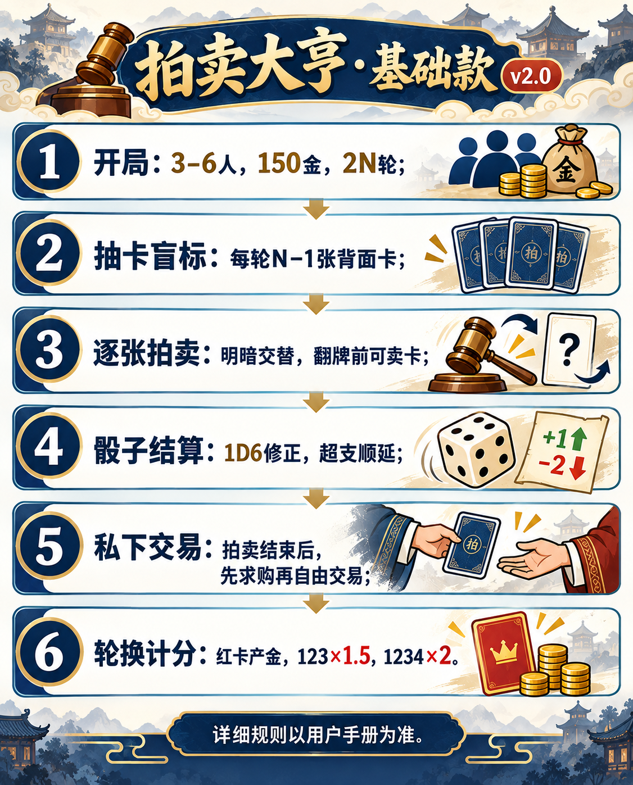

拍卖大亨·基础款 v2.0
3–6 人参与，每人从 150 金出发，用拍卖、交易和红卡产金经营收藏。经过人数两倍的轮次后，金币与藏品总分最高者获胜。

一、开局
- 房主邀请 3–6 位玩家，可用机器人补足。每人起始金币 150。
- 系统从九个时代随机选出与人数相同的时代，并秘密移走其中一个时代的红卡。每个时代有 1 星三张、2 星三张、3 星两张、4 星红卡一张；估值依次为 10、20、30、40。
- 开局每人掷 1D6，最高者为第一位起始玩家；并列最高者重掷。第一位决定顺时针或逆时针方向，全场不变。
- 总共进行 2N 轮，N 为玩家人数。
九时代卡牌名录
每个时代的同星卡牌同名；1 星 3 张、2 星 3 张、3 星 2 张、4 星红卡 1 张。
| 时代 | 1 星（×3） | 2 星（×3） | 3 星（×2） | 4 星红卡 |
|---|---|---|---|---|
| 春秋战国 | 布币 | 莲鹤方壶 | 曾侯乙编钟 | 越王勾践剑 |
| 秦 | 半两钱 | 秦陵铜车马 | 秦俑将军俑 | 传国玉玺 |
| 汉 | 五铢钱 | 长信宫灯 | 马王堆帛画 | 金缕玉衣 |
| 三国 | 太平道符 | 铜雀台瓦砚 | 青釭剑 | 的卢马 |
| 唐 | 开元通宝 | 唐三彩骆驼 | 簪花仕女图 | 兰亭序真迹 |
| 宋 | 交子 | 汝窑天青釉洗 | 清明上河图 | 苏轼寒食帖 |
| 元 | 中统元宝交钞 | 青花鬼谷子下山罐 | 元青花萧何追韩信梅瓶 | 富春山居图 |
| 明 | 大明宝钞 | 成化斗彩鸡缸杯 | 永乐大典 | 万历金翼善冠 |
| 中国民国 | 袁大头 | 中山装 | 张大千泼墨山水 | 翠玉白菜 |
二、每轮怎么走
- 轮换结算：新起始玩家登场；红卡产金，拍卖行对 1–4 星各投 1D6 更新议价加成。
- 抽卡与盲标：抽 N−1 张背面卡，按位置摆放。起始玩家背面选 1 张心仪卡，选中卡移到首位先拍，并选择第一张明拍或暗拍；之后明暗交替。
- 逐张公开拍卖：每张卡翻面前开放拍卖行出售窗口；四种星级倍率在出售窗口上方显示。所有玩家都可卖任意数量手牌，出售前弹窗确认实收金额；各自可切换已准备/未准备。起始玩家在全员准备后关闭窗口并翻开该卡，开始拍卖。全部卡拍完再进入私下交易。
- 私下交易：起始玩家先发一次求购；成功则本轮交易结束。未成功可拿自己 1 张卡发起一次自由交易；对方有权拒绝。
- 轮换：起始玩家按固定方向传给下一位。禁拍若尚未结束，此时立即解除。
起始玩家可以参加正式拍卖。如果拍到自己盲标的卡，修正后实付八折。盲标时所有卡保持背面，任何人都看不到牌面。
三、明拍、暗拍与付款
明拍起拍价为估值的一半，至少 5 金；每次加价至少 2 金；可用 +2/+5/+10 快捷按钮填写金额，再确认出价。在线版依次提示玩家出价或退出，待没有人继续加价时落槌。暗拍没有起拍价，各玩家秘密报一个非负整数；0 表示放弃。最高报价若并列，仅并列者重拍，最多三次；第三次仍并列则流拍。
| 星级 | 骰 1/2/3 | 骰 4/5/6 |
|---|---|---|
| 1 星 | +1 / +2 / +3 | −1 / −2 / −3 |
| 2 星 | +2 / +4 / +6 | −2 / −4 / −6 |
| 3 星 | +3 / +6 / +9 | −3 / −6 / −9 |
| 4 星 | +4 / +8 / +12 | −4 / −8 / −12 |
落槌后只投一次 1D6，实际付款按报价加该骰修正，最低为 0 金；盲标卡按八折结算。没有额外的拍卖佣金。若已持 1 张红卡而通过拍卖获得第 2 张，另加 50% 奢侈税；第 3 张起另加 100%。金币按整数结算，折扣与税额的零头向上取整。
最初中标者若付款超出当前金币，禁拍接下来两场正式拍卖。该卡依报价次序由第二、第三名使用同一骰修正尝试接手；接手者超支不受禁拍。都无法付款则流拍。轮换起始玩家会提前解除禁拍。修正结算时出售窗口已关闭，不能临时卖卡凑钱。
四、拍卖行与私下交易
议价加成按 1–2 点加 10%、3–4 点加 20%、5–6 点加 30%，各星级累计，最高加成 30%。出售价格为估值乘当前议价倍率。每卖一张，该星级议价加成降低 10 个百分点；出售数量不限。拍卖行只收不卖，也不收普通佣金。红卡卖给拍卖行仍按成交价向卖方收 20% 红卡税。议价加成没有下限；实际收购金额最低为 0 金。
求购时，起始玩家说出卡名和金币报价，持有该卡的玩家可响应；起始玩家选一位完成交易，或放弃。求购未成功才可自由交易：起始玩家选自己一张卡、交易对象和金币/对方卡牌条件；对方同意才成交。私下交易不掷价格骰。红卡交易若涉及金币，卖方按成交价交 20% 税。
五、红卡与终局
红卡获得后全场可见。每次起始玩家轮换时，每张红卡为持有人产金：未集齐同系 1、2、3 星时，同系手牌数 ×2；集齐后同系手牌数 ×4。红卡可以正常卖出与交易。
同一时代拥有 1、2、3 星各至少一张时，该时代每张藏品估值 ×1.5；再有红卡则每张 ×2。被藏红卡的时代最多获得 ×1.5。若终局持有红卡却没有同系 1、2、3 星各一张，该红卡估值没收；其他藏品照常计分。重复卡均计入套组倍率，但不能替代缺失星级。
总分 = 剩余金币 + 藏品加成后估值 − 被没收的红卡估值。同分先比剩余金币，再比完整四星套数，仍相同按入席顺序。
六、围桌联机与交流
- 打开首页，用邮箱账号或游客身份创建房间。分享房间链接；新进房的玩家先在旁观席，可点击桌边空座位入席，也可继续旁观。
- 六个座位围绕拍卖桌排列，显示头像、昵称、金币和身份。房主可点击空位安排机器人，也可在开局前移走机器人；至少三位藏家入席后由房主决定何时开局。开局后座位锁定，晚到的人仍可旁观。
- 入房后可发文字消息；按住语音键录制、松开发送，单条最多 15 秒。旁观者也能交流，但不能看他人手牌或参与竞价。语音消息可点击播放；录制需要浏览器麦克风权限。
- 页面每个阶段只显示你能做的操作；拍卖记录显示掷骰、付款、流拍与交易。手牌仅本人可见，红卡公开。
- 离线真人会由机器人托管；账号玩家重开房间可接管，游客关闭浏览器后可能无法取回席位。
七、操作辅助
- 手机端“桌面”承载拍卖和当前操作，藏品可从底部进入；交流从抽屉展开。房间码、拍卖记录和退出在页头菜单，问号打开玩法说明。
- 出价框会按六种骰面计算可能实付范围；若最高实付超过余额，会提示失约风险。落槌后，桌面显示报价、骰点、折扣、税费和实付。
- 求购与自由交易在提交或同意前显示卡牌、金币、红卡税及预计余额。
- 藏品页按时代显示当前估值、缺少的星级；终局排名可展开逐时代计分。
- 轮到真人操作时有 90 秒倒计时。房间信息里可选择超时后按机器人策略托管，或在竞拍时自动放弃。超时托管后可在桌面点击“接管我的席位”。